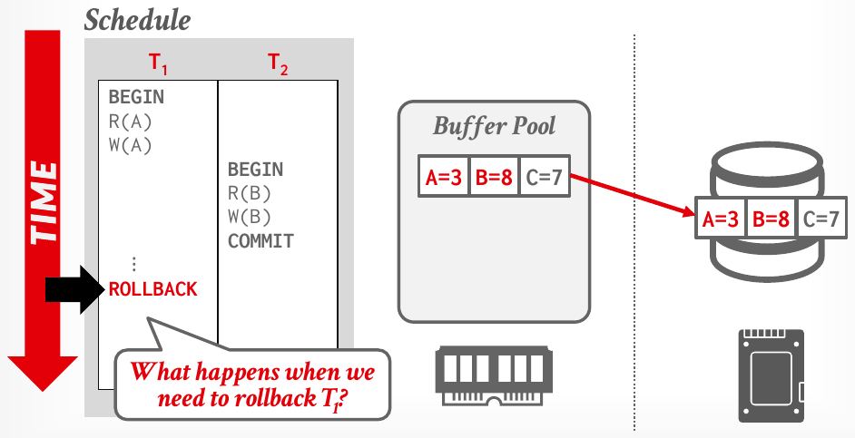
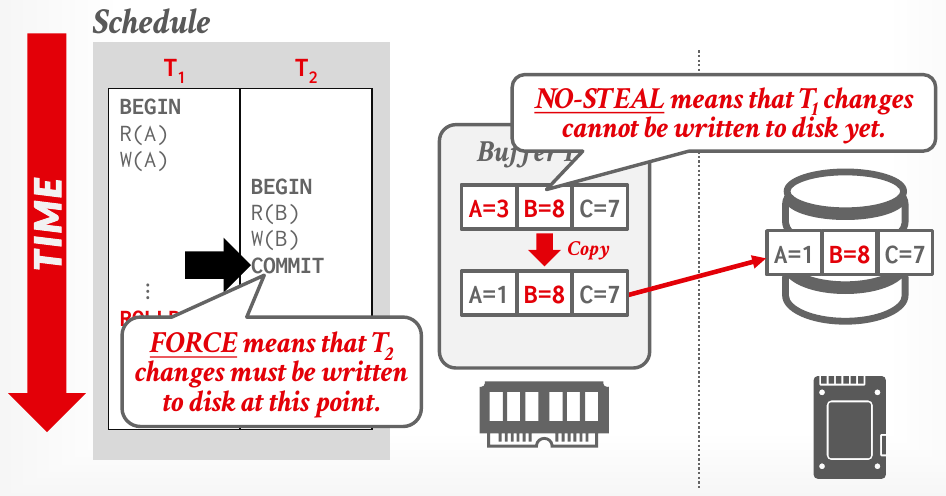
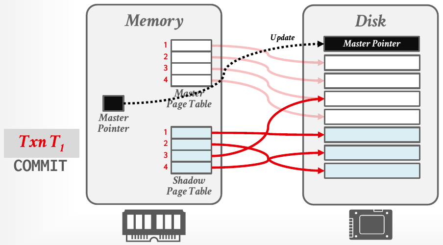

Database Internals in Go · Unit 9 · Lesson 1
Buffer Pool Policies and Shadow Paging
Classify a buffer pool by its STEAL and FORCE policies, say for each combination whether crash recovery needs undo, redo or both, and explain how shadow paging and SQLite's rollback journal get by with little or no recovery work.
Units 7 and 8 kept concurrent transactions from seeing each other's partial work. Lecture #21 opens with the rest of ACID: concurrency control gives a DBMS atomicity, consistency and isolation, and it still has to ensure atomicity and durability. How hard that is depends on something you have already built: when the buffer pool writes dirty pages to disk. Two policies decide it. The simplest combination of the two leads to designs that need almost no recovery work, shadow paging and SQLite's old journal, and pays for it at runtime.
Unit 2, Lesson 1: Project 1's buffer pool is a write-back cache. The replacer picks an unpinned frame whose page is dirty. What does the BPM do before it reads the requested page into that frame?
Unit 7, Lesson 1: slide 47 of Lecture #17 lists the mechanisms that provide each ACID property. Which two properties list redo/undo mechanisms?
Unit 2, Lesson 8: what does FlushPage do to a page that is in memory and dirty?
What a crash takes away
Slide 5 shows the problem. T1 reads A, which brings the page holding A=1 into the buffer pool, writes A=2 in memory, and commits. The machine then crashes before the page reaches disk. Memory is volatile, so the change is gone, although the DBMS told the application that T1 committed.
Crash recovery algorithms are techniques that keep the database consistent, transactions atomic and committed changes durable despite failures (slide 6). Every recovery algorithm has two parts: actions during normal transaction processing that make recovery possible, and actions after a failure that bring the database back to a correct state. Lecture #21 covers the first part, and Lecture #22 the second.
Slide 8 states what the DBMS must guarantee while it uses memory for speed:
- the changes of a transaction are durable once the DBMS has told somebody that it committed;
- no partial changes are durable if the transaction aborted.
Recovery has two primitives for this (slide 9). Undo removes the effects of an incomplete or aborted transaction. Redo re-applies the effects of a committed transaction for durability. The notes add that not every algorithm uses both, and the slide says that how the DBMS supports them depends on how it manages the buffer pool.
One page, two transactions
Slide 10's example puts three values on one page: A=1, B=9, C=7. T1 begins, reads A and writes A=3. T2 begins, reads B, writes B=8 and commits. Later, T1 rolls back. When T2 commits, the slide asks two questions:
- Do we force T2's changes to be written to disk?
- Is T1 allowed to overwrite A on disk even though it has not committed?
If the DBMS answers yes to both, it writes the whole page at T2's commit, and the page on disk becomes A=3, B=8, C=7.

STEAL and FORCE
The two questions correspond to two independent policies of the buffer pool.
The steal policy (slide 11) decides whether the DBMS can evict a dirty object in the buffer pool that was modified by an uncommitted transaction, and overwrite the most recent committed version of that object in non-volatile storage. Under STEAL, eviction and overwriting are allowed; under NO-STEAL, they are not. The notes' mnemonic: the system "steals" dirty pages from active transactions and writes them to disk.
The force policy (slide 12) decides whether the DBMS requires all updates made by a transaction to be written back to non-volatile storage before the transaction can commit. Under FORCE, write-back is required; under NO-FORCE, it is not. In the notes' words, the system "forces" all changes to disk at commit time.
STEAL concerns uncommitted data reaching disk early, and FORCE concerns committed data reaching disk on time. Each one decides whether recovery needs one of the two primitives (the notes, section 6):
- With STEAL, a page on disk can hold changes of a transaction that later aborts or never finishes, so recovery needs undo. With NO-STEAL, it never has to undo anything on disk.
- With NO-FORCE, a committed transaction's changes may still be only in memory when the system crashes, so recovery needs redo. With FORCE, it never has to redo anything.
| Recovery must… | NO-STEAL | STEAL |
|---|---|---|
| FORCE | neither undo nor redo | undo only |
| NO-FORCE | redo only | undo and redo |
The notes say that only two of the four combinations are common in practice. NO-STEAL + FORCE gives simple recovery and poor runtime performance. STEAL + NO-FORCE gives excellent runtime performance and more complex recovery. The other two offer few practical advantages and are rarely implemented.
#21 Database Logging, "Buffer pool policies" (14:29), slides 10–14: the one-page example, the two questions, the STEAL and FORCE definitions, and the NO-STEAL + FORCE walk-through.
NO-STEAL + FORCE
Slide 13 replays the example under NO-STEAL + FORCE. When T2 commits, FORCE says T2's change must reach disk now, and NO-STEAL says T1's change must not. Both live on the same page, so the DBMS copies the page in memory, applies only T2's change to the copy, and writes the copy: A=1, B=8, C=7. Rolling T1 back is now trivial, because none of its changes are on disk.

Slide 14 calls this the easiest approach to implement. Recovery never has to undo an aborted transaction's changes, because they were never written to disk, and never has to redo a committed one's, because all its changes were written at commit time. The slide adds a condition: this assumes the hardware writes atomically, so that a crash can't leave half a page on disk.
The approach has a hard limit. Under NO-STEAL, a dirty page can't leave memory before its transaction commits, so everything a transaction modifies, its write set, must fit in memory. A transaction whose write set is larger than the buffer pool can't run at all. The notes add that writing pages at every commit wears out storage devices such as SSDs faster.
Shadow paging
Unit 7, Lesson 1 mentioned shadow paging in one paragraph. Lecture #21 calls it an improvement on the naive scheme, and it keeps the same NO-STEAL + FORCE policy (slide 15). The DBMS keeps two versions of the database:
- the master, which contains only changes from committed transactions;
- the shadow, a temporary database with the changes of uncommitted transactions.
The DBMS copies a page before a transaction modifies it, which the notes call copy-on-write. The pages are organized as a tree whose root is a single disk page, and the root always points to the master. To commit, the DBMS overwrites the root so that it points to the shadow, swapping master and shadow. Before that write, none of the transaction's updates are part of the database on disk; after it, all of them are. The notes say this overwrite can be done atomically.
Slide 16 walks through an example. A master page table with four entries sits in memory, and a master pointer on disk points to it. When T1 starts, the DBMS creates a shadow page table that initially points to the same pages as the master. T1 updates only shadow pages: each modified page is written to new space on disk and the shadow page table is changed to point to it. Read-only transactions keep reading through the master page table.

After the switch, the shadow page table is the master, and the pages only the old master used are garbage collected later. The shadow pages were on disk before T1 committed, yet this still counts as NO-STEAL: slide 11's definition is about overwriting the most recent committed version, and shadow pages never overwrite a master page.
Recovery is easy (slide 17). To undo, remove the shadow pages and leave the master and the root pointer alone. Redo is not needed at all. Slide 18 lists what that costs:
- Copying the entire page table is expensive. LMDB structures its page table like a B+tree, so it only copies the paths in the tree that lead to updated leaf nodes.
- Commit overhead is high: every updated page, the page table and the root must be flushed. The notes point out that these are writes to random, non-contiguous pages.
- Data gets fragmented, which is bad for sequential scans.
- Old pages need garbage collection.
- It supports only one writer transaction at a time, or transactions in a batch. The notes' figure also assumes a single updating transaction; several concurrent writers would need several shadow page tables, merged at commit.
#21 Database Logging, "Shadow paging" (24:21), slides 15–18: master and shadow, the page-table animation through the commit, undo and redo, and the disadvantages.
SQLite's rollback journal
Before 2010, SQLite used a different design, known as rollback mode (slide 19). When a transaction modifies a page, the DBMS first copies the original page to a separate journal file, and only then overwrites the master version. After a restart, if a journal file exists, the DBMS copies the original pages back over the database pages, which undoes the changes of uncommitted transactions. The notes say it does this blindly.
![Left, the slide text: When a txn modifies a page, the DBMS copies the original page to a separate journal file before overwriting master version, called rollback mode. After restarting, if a journal file exists, then the DBMS restores it to undo changes from uncommitted txns. Right: Memory holds Page 2 and Page 3. Disk holds Page 1 to Page 6 and, behind a dotted line, a Journal File with Page 2 and Page 3. Red arrows run from the pages in memory down to Page 2 and Page 3 of the database, and a thick red arrow points up at the journal file.](../assets/slides/L21-sqlite-journal-p61.png)
In the slide's animation, the transaction's modified page 2 reaches the database file before the transaction finishes, and then the system crashes. That early write is a steal. The notes confirm that the journal allows STEAL, unlike shadow paging, and so removes the memory limit on write sets. The journal holds before-images, which is undo information. The notes also say the design is typically limited to one writer at a time, which suited SQLite's goals, and that SQLite switched to a write-ahead log after 2010 for better performance. The next lesson covers that log.
#21 Database Logging, "SQLite journal mode" (39:25), slide 19: pages copied to the journal, a crash, and the restore on restart.
Your Project 1 buffer pool in these terms
Your buffer pool from Project 1 writes a dirty victim back before it reuses the frame, and it writes pages when FlushPage or FlushAllPages asks. It has no idea which transaction changed a page, or whether that transaction has committed: the frame's only record of a change is FrameHeader.isDirty. So it enforces neither policy. Once Project 4's transactions update tuples through it, any eviction of a page with an uncommitted change is a steal, and since nothing writes pages when a transaction commits, it behaves as NO-FORCE. Your Commit in Project 4 sets timestamps under commitMu but forces no page. A committed transaction's changes reach disk only if the buffer pool happens to write them.
By the table above, STEAL + NO-FORCE needs both undo and redo, and so far nothing on disk could provide either. Lecture #04's slide 33 already warned that background writing must not write dirty pages before their log records are written, and the next lesson adds that log. BusTub's BufferPoolManager constructor takes a log manager, with the comment "Please ignore this for P1"; the Go port leaves that parameter out.
Work it out
Decide each one on paper before opening the result.
-
What to think about
Is page 5 dirty? What does the eviction path do with a dirty victim, and whose change is on that page?
The method
Compare what happens with slide 11's definition of STEAL. Then ask what the disk holds after the crash and what T1's rollback would need.
The result
Page 5 is dirty, so the BPM writes it back and reuses the frame. An uncommitted change has overwritten the committed version on disk: that is STEAL. After the crash, T1 can never commit, so recovery must undo its change, which needs the old value. Nothing on disk holds it.
-
What to think about
Treat the two policies separately: FORCE talks about committed transactions, STEAL about uncommitted ones.
The method
Where were T1's changes when it committed? Where is T2's change after the eviction, and will T2 ever commit?
The result
T1: leave it alone. FORCE wrote all its changes before it committed, so there is nothing to redo. T2: undo. The eviction stole its uncommitted change onto disk, and T2 never commits. This is the "undo only" cell of the table.
The homework behind these questions
The questions marked HW6 come from CMU's Homework #6: Question 2, with the original figures. Work each one out on paper first, then click the option you got. The quiz tells you at once whether it matches CMU's official answer, and explains why. To compare your working step by step, open the official solutions for Question 2.
Check your understanding
HW6 Q2(a), true or false: "The STEAL policy means that the pages modified by a transaction could be written to non-volatile storage before that transaction commits." Which statement matches the official answer?
HW6 Q2(b), true or false: "In reference to recovery algorithms that use a write-ahead log (WAL). Under NO-STEAL + FORCE policy, a DBMS will have to undo the changes of an aborted transaction during recovery." Which statement matches the official answer?
HW6 Q2(d), true or false: "If the DBMS uses the FORCE policy, it could potentially have to redo the changes of previously committed transactions during recovery." Which statement matches the official answer?
In slide 13's example, T1 (uncommitted) changed A from 1 to 3 and T2 changed B from 9 to 8, on the same page with C=7. Under NO-STEAL + FORCE, what does the DBMS write to disk when T2 commits?
How does shadow paging commit a transaction, and what does recovery have to do afterwards?
Primary sources: CMU 15-445/645 Fall 2025 Lecture #21 slides 4–19 and notes (sections 1–6); Lecture #04 slide 33; Lecture #17 slide 47; Homework #6 Question 2, parts (a), (b) and (d), and its official solutions; BusTub src/include/buffer/buffer_pool_manager.h at commit d49b823; the Go port's bufferpool/frame_header.go, bufferpool/buffer_pool_manager.go and concurrency/transaction_manager.go.